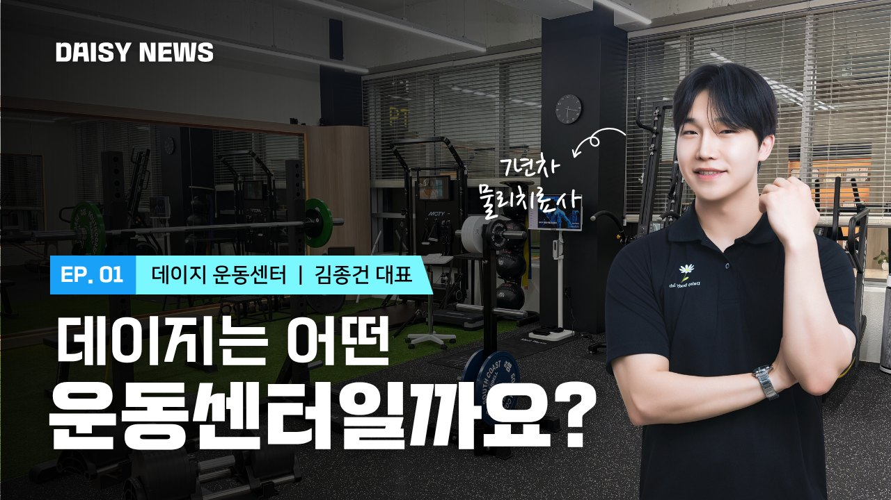

ABOUT DAISY
센터 소개
움직임을 이해하는 것부터 시작하는 데이지의 철학과, 운동을 설계하는 사람을 소개합니다.
PHILOSOPHY
운동을 시작하기 전,
먼저 몸을 이해합니다.
데이지는 운동 횟수와 강도보다, 지금 내 몸이 어떻게 움직이는지를 먼저 살펴봅니다.
자신의 몸을 이해하고 더 효율적으로 움직이는 방법을 배우는 것. 그것이 오래 지속되는 운동의 시작이라고 믿습니다.
다시 피어나는 몸의 균형
DIRECTOR
운동의 시작은
정확한 이해에서 출발합니다
김종건 대표
KIM JONG GEON · Physical Therapist · Exercise Specialist
자격
- 물리치료사 면허
- 생활스포츠지도사 2급 (보디빌딩)
- 국제 필라테스 지도자
학력
- 고려대학교 스포츠의학 석사
- 원광보건대학교 물리치료 학사
현재 활동
- 데이지 운동센터 대표
- 여성건강연구소 암재활 강사
- 기능해부학 운동조절 교육 강사
약력 전체 보기
이전 경력
- 전주 예수병원신경계 재활운동실 · 근골격계 재활치료실
- 피지오랩 운동센터
- 얼라이브 휘트니스
- 에코 필라테스
- 연후 필라테스
- KPGA 2부 투어 컨디셔닝 트레이닝 지원
교육 이수
- PNF Level 1 & 2
- Bobath course
- 척수손상재활 cervical course
- KEMA shoulder master course
- 체코 프라하 스쿨 DNS Clinical B
- CMS 인지움직임전문가
- 척추안정화연구소 연부조직가동술
- TPI 골프 트레이닝 전문가
- 스포츠 테이핑 전문가
- 스포츠 손상 예방 및 컨디셔닝
- 국제필라테스지도자협회
전문성이 수업에 반영되는 방식
관찰Observe
불편함이 나타나는 움직임을 먼저 살펴보고 운동의 순서를 정합니다.
조절Adjust
몸의 상태와 운동 단계에 맞춰 운동의 강도와 범위를 조절합니다.
설명Explain
평가 결과와 운동의 이유를 회원이 이해할 수 있도록 설명합니다.
DAISY NEWS · YOUTUBE
영상으로 만나는
데이지 운동센터
김종건 대표가 직접 데이지가 어떤 운동센터인지 소개합니다.
EP. 01 데이지는 어떤 운동센터일까요?
유튜브 ‘데이지 운동센터’ 바로가기 →